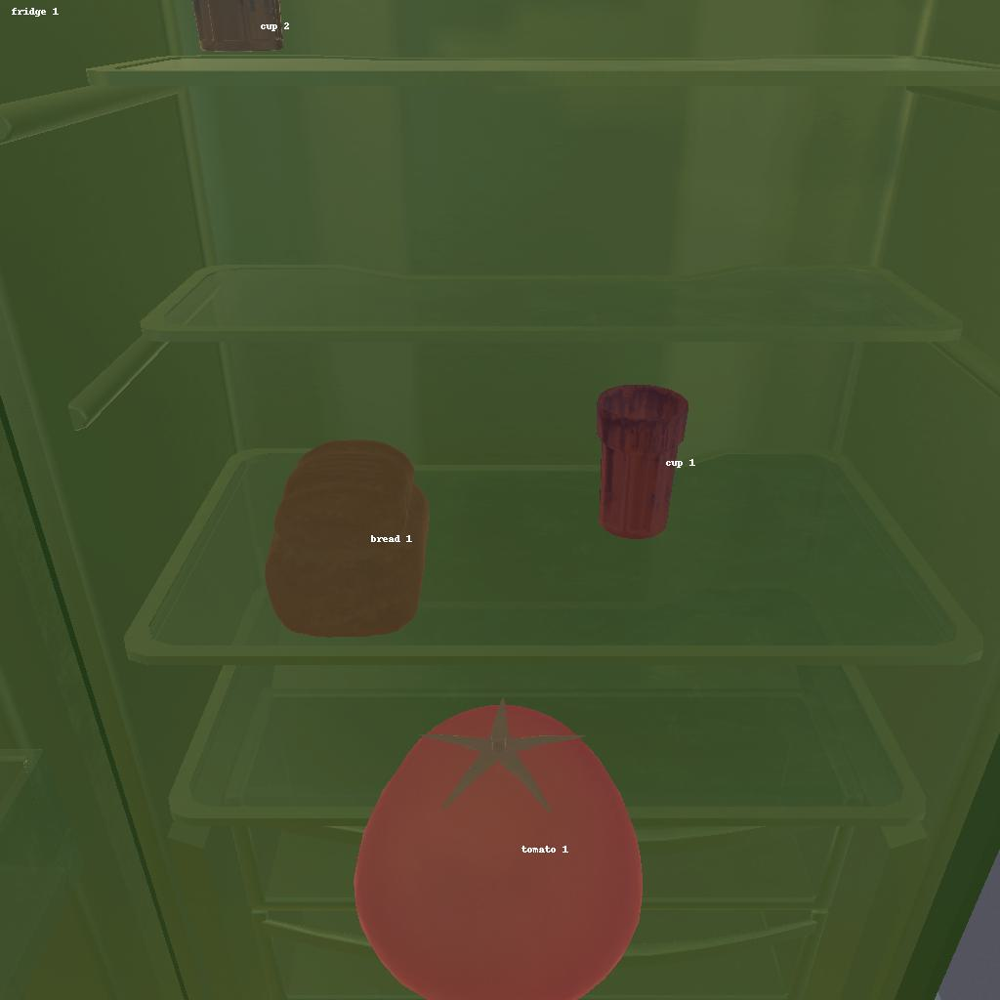
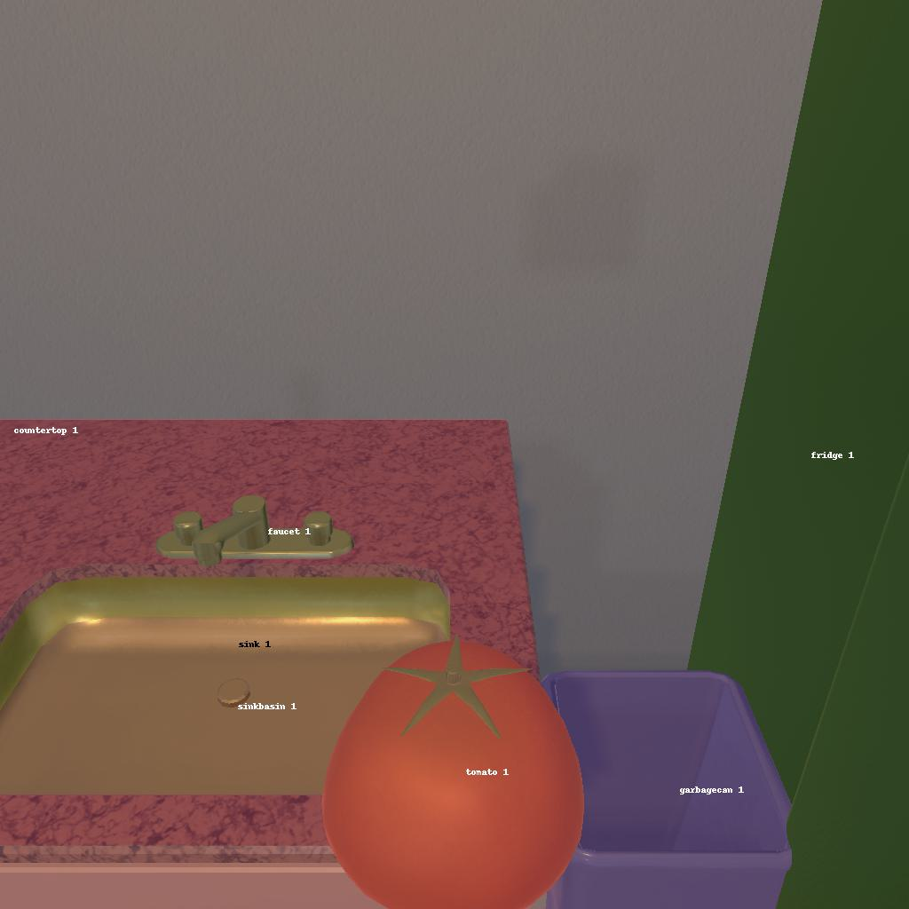

---------------------------------------------------------task: 13---------------------------------------------------------
--------------------------------------------------------------------------------------------------------------------------------------------------------------------
--------------------------------------------------------------------------------------------------------------------------------------------------------------------
Step:--------------------------------------------------------------------------6-------------------------------------------------------------------------------
----------------------------------------
VLM Prompt:
Image1:
Image2:
Image3:
**Instruction**
1. Analyze the provided image to identify all visible household objects, focusing on those relevant to the task description "clean some tomato and put it in garbagecan."
2. Use the analysis of the image and the task hint "The agent must find an object of the desired type, pick it up, go to a sink or a basin, clean the object with a sink or basin, and then find the correct location to place it and put it down there. The agent does not need to use soap bottle or faucet to clean the object, and the agent just needs to do action that is "clean the object with the sink or sink basin"." to answer the question: what is the most reasonable action in the choices for the task description "clean some tomato and put it in garbagecan"?
4. Decide and write the answer using the template: The answer is: (i): , where i is the real number. If there is no desired object in the image, search every place based on **Initial Observation** to find the object. And if no one is exactly correct, choose a similar answer.
**Initial Observation**
You are in the middle of a room. Looking quickly around you, you can see countertop (1-2), cabinet (1-11), garbagecan (1), toaster (1), sinkbasin (1), fridge (1), sink (1), microwave (1), drawer (1-3), stoveburner (1-4), coffeemachine (1), diningtable (1)
**Answer Choices**
(1): go to countertop 1
(2): go to cabinet 1
(3): go to cabinet 2
(4): go to cabinet 3
(5): go to garbagecan 1
(6): go to cabinet 4
(7): go to toaster 1
(8): go to fridge 1
(9): go to sink 1
(10): go to cabinet 5
(11): go to microwave 1
(12): go to countertop 2
(13): go to cabinet 6
(14): go to cabinet 7
(15): go to drawer 1
(16): go to stoveburner 1
(17): go to stoveburner 2
(18): go to cabinet 8
(19): go to drawer 2
(20): go to stoveburner 3
(21): go to stoveburner 4
(22): go to coffeemachine 1
(23): go to cabinet 9
(24): go to cabinet 10
(25): go to cabinet 11
(26): go to diningtable 1
(27): go to drawer 3
(28): put tomato 1 in/on sinkbasin 1
(29): clean tomato 1 with sinkbasin 1
(30): examine tomato 1
(31): examine sinkbasin 1
**Answer**
Let's think step by step by following the instructions.
----------------------------------------
----------------------------------------
Original Response:
Firstly, we need to find the tomato to clean it. According to Image1, Image2, and Image3, there is a tomato on the countertop 1. The instruction specifies that the agent does not need to use soap bottle or faucet to clean the object, and the agent just needs to do the action "clean the object with the sink or sink basin". Therefore, we do not need to consider any action related to picking up or using the faucet.
Given the task description "clean some tomato and put it in garbagecan," the most reasonable next action would be to clean the tomato. Since the tomato is already located at countertop 1, which is next to sink 1, the agent does not need to go anywhere to clean the tomato.
The correct action from the given choices would be to clean the tomato with the sink basin, as this aligns with the task requirements. There is no direct action to put the tomato in the garbagecan, but the closest action to proceed with the task would be cleaning the tomato first.
The answer is: (29): clean tomato 1 with sinkbasin 1.
----------------------------------------
----------------------------------------
>>> Refine Original VLM Response and Get Pure Action: clean tomato 1 with sinkbasin 1
----------------------------------------
-----------------------------------------------------------------
Running time: 12.986352443695068 seconds
Total Money: 7.817590000000002
-----------------------------------------------------------------
-----------------------------------------------------------------
Text Observation:You clean the tomato 1 using the sinkbasin 1.
-----------------------------------------------------------------
UNSUCCEED